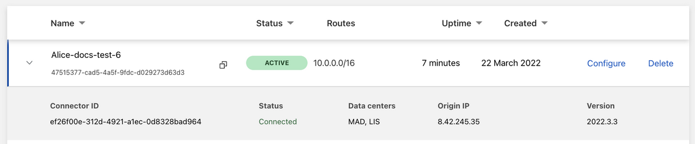
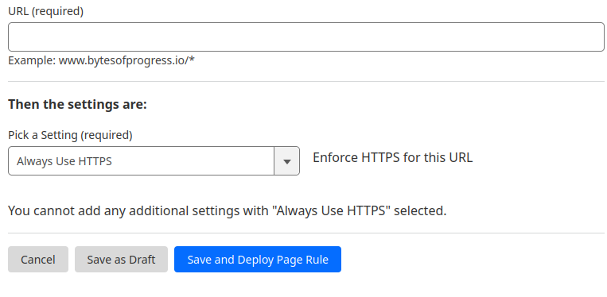

BytesOfProgress
Wiki
Websites with Cloudflare Tunnel
Cloudflare Tunnels are really useful if you want to publish your website or webservice on the internet wihout opening ports, paying for a static IPv4 or setting up dynamic DNS and worrying about SSL certificates.
It even lets you publish multiple services / websites without you needing a public IPv4 at all!
In this guide we will take a look on how to set up cloudflare tunnels easily. This will work for every webapp, although hosting video streaming and large files is restricted by Cloudflare's Service-Specific Terms for the CDN.
For this you will need a domain name managed by Cloudflare by either using Cloudflare as your domain registrar or pointing your domain to Cloudflare's nameservers.
Setting it up
You have the option of creating a tunnel via the dashboard or via the command line. I recommend getting started with the dashboard option, since it allows you to manage the tunnel from any machine, and anywhere.
Step 1: Sign up for a free Cloudflare account.
Step 2: Navigate and login to your Cloudflare Zero Trust dashboard
Step 3: Navigate to Networks ---> Tunnels and select "create a tunnel".
Step 4: Choose Cloudflared for the connector type.
Step 5: Enter a name for your tunnel and click "save".
Step 6: check that the environment under Choose an environment reflects the operating system on your machine, then copy the command in the box below and paste it into a terminal window.
Once the command has finished running, your connector will appear in the tunnel options. Click "Next".
Step 7: In the Public Hostnames tab, choose a Domain and specify any subdomain or path information and specify a service, for example "https://localhost:8000". Make sure to select the protocol the website is serving right now.
Step 8: Under Additional application settings, you can specify any parameters you would like to add to your tunnel configuration. Then save your settings.
Step 9: After saving the tunnel, you will be redirected to the Tunnels page. Look for your new tunnel being listed with its active connector.
Forcing SSL
Step 1: Navigate to your Cloudflare Dashboard
Step 2: Choose your domain, and then navigate to "Rules ---> Page rules"
Step 3: Click on "Create page rule".
Step 4: Enter the URL you want to enforce HTTPS for, and select "Always Use HTTPS" in the dropdown-menu.
Step 5: Click on "Save and deploy page rule".
back